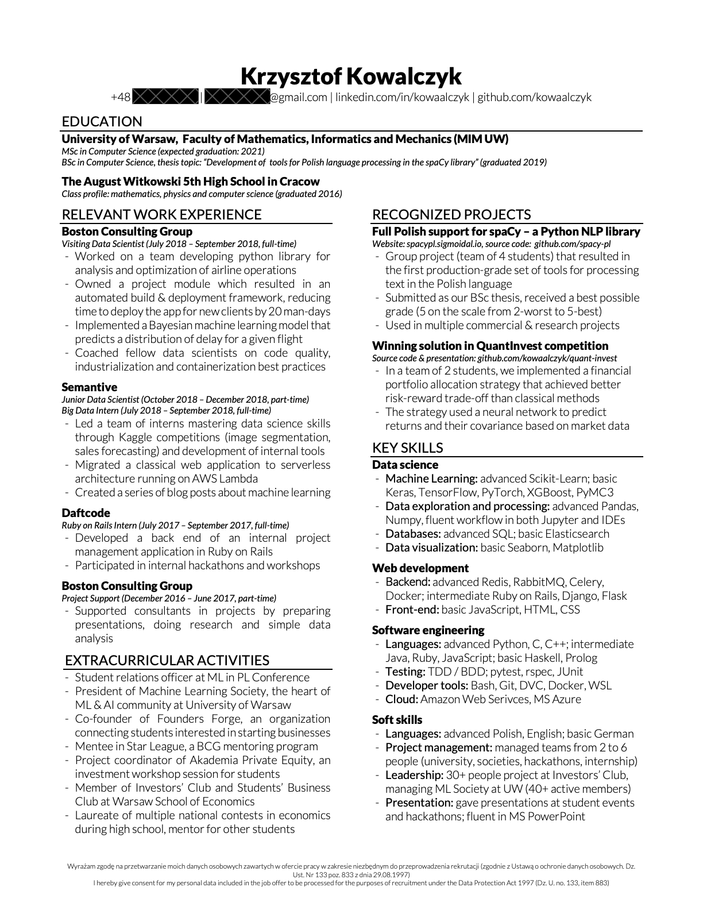
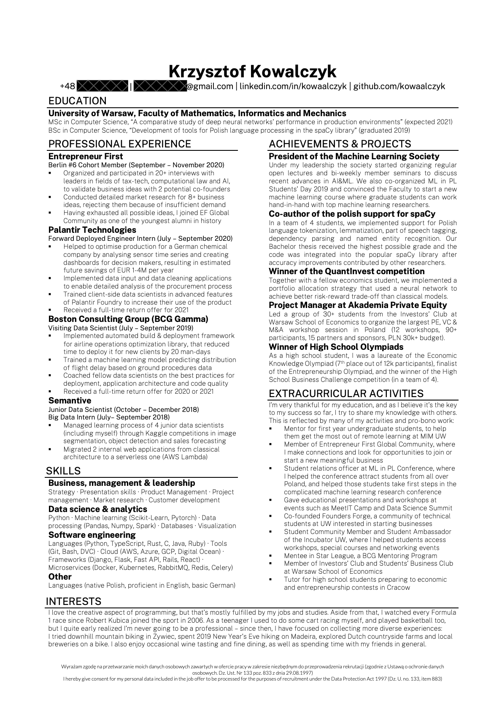

Jak zacząć karierę jako developer
Prosty przewodnik napisany z myślą o studentach MIM UW, ale potencjalnie przydatny dla każdego kto zaczyna programować.
Spis treści
Szybkie wprowadzenie do rynku pracy
Rekrutacja na pierwszy staż
Specjalizacje
TODO
Inne przydatne porady
TODO
Podziel się swoimi doświadczeniami
W tym momencie większość rodziałów jest jeszcze w budowie, jednak to co jest tu widoczne jest już całkiem przydatne. Jeśli chcesz się podzielić swoimi doświadczeniami, zgłosić jakiś błąd lub zaproponować poprawkę zachęcam do zrobienia tego poprzez GitHub: https://github.com/kowaalczyk/dev-kariera.
Praca jako developer
Praca jako developer różni się często od tego co robi się na studiach - problemy które rozwiązujemy nigdy nie są tak precyzyjnie postawione, projekty są znacznie większe i wymagają współpracy wielu osób, wiele rzeczy zmienia się niezależnie od nas i wpływa to na zmiany w kodzie. Nie znaczy to że studia nie przydają się w pracy - byćmoże nie wszystkie przydają się w każdej pracy, ale jako osoba która skończyła MIMUW miałem wielokrotnie okazję wykorzystać to czego nauczyłem się na studiach w praktyce.
Liczba technologii, narzędzi i sposobów ich wykorzystania może wydawać się przytłaczająca, ale w praktyce praca programisty polega na ciągłym uczeniu się nowych rzeczy i rozumieniu ich coraz dokładniej. To normalne że na początku nie umiesz prawie niczego, jednak z czasem coraz szybciej będziesz w stanie uczyć się nowych rzeczy. Schematy których nauczysz się jeszcze na studiach, w pracy i podczas własnych eksperymentów będą powtarzały się coraz częściej - nieznajomość szczegółów implementacji jest stanem normalnym, w miarę z rozwojem doświadczenia przyzwyczaisz się do tego coraz bardziej bo zrozumienie nieznanych rzeczy będzie coraz prostsze.
Co tak naprawdę robią ludzie po informatyce
Jeśli pierwszy raz szukasz pracy, wszystkie nazwy stanowisk mogą brzmieć trochę dziwnie - ta lista pomoże Ci się zorientować o co właściwie chodzi w najbardziej popularnych rolach. Definicje poniżej nie są zbyt dokładne i każda firma podchodzi do nich nieco inaczej - niemniej jednak warto je znać i dopytać się o konkrety związane ze stanowiskiem na które aplikujesz już podczas rozmowy z konkretną firmą.
Technologie i umiejętności które wymieniam ponizej są oczywiście przykładami, często nie trzeba ich umieć dobrze (albo nawet wcale) aby dostać się na konkretne stanowisko, szczególnie jeśli chodzi o staż a nie pełnowymiarową pracę. Wymieniam je bo mogą Cię zaciekawić i przydać się na studiach lub podczas robienia czegoś swojgo, a także pomogą zrozumieć co jest do czego używane.
Backend developer
Jedna z klasycznych ról która polega na pisaniu backendu - części kodu która działa na serwerze i nie jest wysyłana do użytkownika. Zazwyczaj sprowadza się to do specjalizacji w jednym z popularnych frameworków: Django, Ruby on Rails, Spring, etc. Kod który pisze backend developer to przeważnie integracja z bazą danych, zewnętrznymi serwisami (przeważnie przez REST APIs), autentykacja i autoryzacja użytkowników no i oczywiście przesyłanie danych do frontendu - aplikacji webowej lub mobilnej którą widzi końcowy użytkownik.
Coraz popularniejsze staje się też pisanie aplikacji w formie mikroserwisów, gdzie zamiast jednego backendu mamy wiele niezależnych serwisów (mini-aplikacji) które komunikują się między sobą - dzięki temu można łatwiej skalować aplikację dla rosnącej liczby użytkowników i każdy może używać dowolnych technologii w obrębie każdego serwisu. Przydatne technologie do użycia w takich architekturach to Docker i Kubernetes, wiele osób wybiera też język Go do pisania serwisów ponieważ ma on wiele przydatnych bibliotek (niemniej jednak każdy popularny język programowania się do tego nadaje).
W większych firmach taka rola zazwyczaj sprowadza się do programowania nowych funkcjonalności i utrzymywania istniejących, jednak w mniejszych często backend develperzy muszą zajmować się tym czym zajmują się DevOpsi i SRE - deploymentem serwisów, monitorowaniem czy wszystko działa poprawnie i integracją z infrastrukturą (zazwyczaj kupowaną od chmur typu AWS czy Azure).
Frontend developer
Frontend = to co widzi użytkownik aplikacji webowej. Rola polega na pisanie kodu który jest kompilowany, wysyłany i wykonywany przez przeglądakrę kiedy ktoś używa aplikacji webowej - są to wszystkie guziki, animacje, layout strony, ale też znacznie bardziej zaawansowane funkcjonalności - walidacja danych w formularzach, wizualizacja danych w ładny i czytelny sposób, zarządzanie pamięcią cache żeby usprawnić działanie aplikacji / umożliwić używanie jej offline i oczywiście integracja z backendem.
Wymaga sensownego zrozumienia podstaw HTML i CSS, ale większość czasu pracuje się w technologiach typu React, Angular albo Vue - wszystko to frameworki napisane w JavaScript / TypeScript które umożliwiają znacznie wygodniejsze implementowanie komponentów i logiki aplikacji.
Frontend development ma swoje wady i zalety - często trzeba namęczyć sie sporo żeby zrobić pozornie proste rzeczy (eg. wyśrodkować obrazek, sprawić żeby strona zmieniała layout na małych urządzeniach), ale za to efekty pracy są szybko widoczne i można łatwo pokazać (np. swojemu szefowi) albo wytłumaczyć (np. rodzinie która nie ma pojęcia co robią programiści).
Full stack developer (lub po prostu developer, software sngineer - SWE, etc.)
Full stack = backend + frontend. Skoro są ludzie którzy robią tylko backend i ludzie którzy robią tylko frontend, to jak możliwe jest robienie jednego i drugiego jednocześnie?
W praktyce nie jest to takie trudne, szczególnie w wielkich firmach gdzie jest dużo doświadczonych programistów którzy mają ogólne wykształcenie. Nauczenie się frontendu na tyle żeby pisać sensownie działające aplikacje jest zadaniem na kilka dni/tygodni dla każdego backendowca z kilkuletnim doświadczeniem, podobnie w drugą stronę. Oczywiście w każdej firmie są ludzie specjalizujący się w jednej konkretnej rzeczy, jednak to czego firma potrzebuje zmienia się często w czasie, i ludzi którzy umieją podstawy frontendu i backendu na tyle żeby szybko zrozumieć konkretne zagadnienia wymagane przez konkretny projekt potrzeba zawsze jak najwięcej. Doświadczeni ludzie pomagają przeważnie ustawić nowy projekt na samym początku i od czasu do czasu mogą doradzić jakieś zmiany lub pomóc naprawić bardzo specyficzne i skomplikowane błedy których mniej doświadczone osoby po prostu nie zauważą.
DevOps specialist
Skrót od developer operations - ta rola polega na tym aby pozostałym developerom pracowało się jak najwygodniej. Zazwyczaj sprowadza się to do pisania narzędzi zwiększających produktywność, automatyzacji zadań, no i przede wszystkim implementacji pipeline'ów do continuous integration (CI) / continuous deployment (CD) - idea jest taka żeby każdy kawałek kodu który przejdzie review trafiał jak najszybciej do wszystkich działających aplikacji, co brzmi prosto ale w praktyce wymaga bardzo dużo ustawień związanych z tym jak merge'ować i cofać zmiany itp.
Przydatne narzędzia to wszystkie te związane z CI/CD: Github Actions, Gitlab CI, Jenkins, CircleCI, Azure Pipelines, itp. Oprócz tego jest sporo narzędzi do zarządzania infrastrukturą jako kodem, takich jak Terraform, Docker, Kubernetes, Ansible no i oczywiście znajomość cloudów (AWS, Azure, GCP, DigitalOcean, etc.).
Ta rola może wydawać się dosyć odległa dla początkujących osób, i w praktyce faktycznie często jest wykonywana przez ludzi którzy mają dużo doświadczenia w pisaniu kodu który działał już na produkcji. Niemniej jednak jest to interesująca ścieżka rozwoju kariery, szczególnie dla osób które lubią rozumieć jak wszystko działa i mieć wszystko dokładnie poukładane.
Site reliability engineer (SRE)
SRE są podobni do DevOps pod względem tego że współpracują blisko z backendowcami / SWE, jednak większośc czasu przeznaczają na monitorowanie stanu aplikacji żeby upewnić się że wszystko działa tak jak powinno, jest w stanie wytrzymać odpowiednio dużą liczbę użytkowników, itp. Sprowadza sie to głównie do pisania super-wydajnych realtime pipelinów do zbierania i analizy logów z wielu serwisów, integrowania tego z alertami i narzędziami typu DataDog no i wyciąganiu wniosków / rekomendacji które mogą być przydatne dla developerów (co warto zmienić żeby aplikacja działała lepiej). Biznesowy impact takich osób też może być dosyć duży - odpowiednia analiza tego jak działają aplikacje często przynosi dużym firmom miliony dolarów rocznie w oszczędnościach na mniejszej liczbie serwerów.
Ta rola pojawiła się początkowo w firmach wielkości Google i Facebooka, jednak teraz można spotkać SRE większości firm które mają ~10M+ użytkowników (w Polsce to np. Allegro i większe banki). Ponieważ nie jest to tak popularna nazwa, często można znaleźć ogłoszenia które nazywają tą rolę nieco inaczej, jednak w każdej dużej firmie są ludzie którzy robią tego typu zadania.
Mobile developer
W zasadzie to identyczna rola do frontend developera, różni sie tylko tym że budujesz software na urządzenia mobilne i przydają się tu technologie takie jak Swift (na iOS), Kotlin (Android), Flutter + Dart lub React Native.
Embedded developer
Embedded devices = komputery i mikrokontrolery wbudowane w większe urządzenia (samochody, roboty, samoloty, rakiety, elektrownie, drony, itd.) - przyjemna rola dla osób które lubią pracować blisko hardware'u i pisać głównie w C, chociaż ostatnio coraz popularne stają się też inne języki.
Wyzwania są tu często zupełnie inne niż w pozostałych przypadkach - kod musi często być mały, używać niewiele pamięci i wiele funkcjonalności wykorzystuje bezpośrednio konkretny hardware na który coś piszemy. Dodatkowo do przemysłowych zastosowań gdzie ważne jest bezpieczeństwo często używa się systemów do formalnej weryfikacji kodu i symulacji do testowania jak program zachowa się w różnych sytuachach.
Pisanie w C może wydawać się proste, jednak kod ściśle związany z hardware'm nie jest zawsze taki piękny i łatwy do napisania, a debugowanie błędów jest znacznie utrudnione przez brak typowych narzędzi. Niemniej jednak ta praca, podobnie jak frontend, daje dużą satysfakcję z możliwośći zobaczenia i pokazania innym co konkretnie się robi.
Data scientist
Data science to w praktyce nieco bardziej wyrafinowana nazwa na anlizę danych, tym razem jednak z naciskiem na zaawansowaną statystykę i programowanie, nie proste obliczenia w excelu. Osoby na tym stanowisku mają zazwyczaj za zadanie przeanalizować pewien rodzaj danych tak, aby użyć ich do usprawnienia produktu w oparciu o jakieś statystyczne metody - na przykład poprawianie rekomendacji produktów w sklepie internetowym, tego w jaki sposób Uber łączy kierowców z klientami czy tego jak ułożony jest plan zajęć.
Rola ta jest znacząco odmienna pod kątem umiejętnosci i narzędzi od tych omówionych wyżej - większość kodu który pisze się jako data scientist to eksperymenty które wykonywane są kilka razy i ważniejsze jest to żeby jak najszybciej je przeprowadzić a nie to żeby sam kod był jak najbardziej wydajny. Ostatecznie, jeśli jakiś eksperyment pokaże że coś można zrobić lepiej, wynkiem jest zazwyczaj model statystyczny albo algorytm który integruje się albo przepisuje na nowo jako częśc aplikacji (bo dopiero wtedy liczy się efektywność).
Typowe narzędzia używane w data science to Python i biblioteki - numpy, pandas, matplotlib, scikit-learn i pytorch / tensorflow. Programy często pisze się dla wygody w Jupyter Notebookach i dopiero potem przenosi na typowy kod jeśli trzeba. Jeśli chodzi o przydatne umiejętności i tutoriale to świetną listę wraz z opiniami prowadzi Koło Naukowe Uczenia Maszynowego MIM UW.
Aby być dobrym data scientist konieczne jest zrozumienie podstaw statystyki, zwłaszcza metod opytmalizacji i machine learningu, oraz ciekawość i chęć do częstych kontaktów z klientami i innymi osobami aby lepiej zrozumieć biznesowy problem. Jest to bardzo ciekawa rola pozwalająca połączyć zainteresowanie biznesem i zdolności matematyczno-informatyczne, a także zmierzyć się z wieloma problemami. Wadą może być natomiast eksperymentacyjna natura pracy, która z definicji oznacza że większość kodu który tworzymy nie przyda się na nic poza udowodnieniem że coś nie działa wystarczająco dobrze.
Data engineer
Aby data scientists mieli na czym pracować, firmy zbierają coraz więcej danych. Dotyczy to nie tylko serwisów internetowych takich jak Amazon czy Facebook, gdzie każda czynność użytkownika jest zawsze logowana, ale też linii produkcyjnych w fabrykach gdzie tysiące robotów zawsze wysyłają dane nt tego co robią czy samolotów, z których każdy wysyła swoje położenie i odczyty z czujników co kilka sekund. Osoby które projektują software do zbierania i przechowywania danych na tak dużą skalę to właśnie data engineers. Zazwyczaj wykorzystuje się do tego rozproszone systemy, ponieważ danych jest po pierwsze za dużo żeby przetwarzać je w czasie rzeczywistym na jednym serwerze (takie przetwarzanie często jest konieczne, np. jeśli chcemy usunąć z nich dane osobowe aby móc przechowywać je w nieskończoność zgodnie z RODO), a po drugie takie wartościowe dane nie mogą być trzymane na jednym dysku nawet gdyby się na nim zmieściły.
Data engineers znają zazwyczaj takie narzędzia jak Apache Spark, Kafka oraz bazy danych (zwłaszcza takie które są rozproszonymi systemami i nie są ograniczone do jednej maszyny - Cassandra, Elasticsearch, Amazon Redshift, itp). Ważne jest też rozumienie infrastruktury, co zazwyczaj sprowadza się do znajomości serwisów oferowanych przez chmury obliczeniowe.
Praca na takim stanowisku może polegać na projektowaniu nowych pipeline'ów zbierających dane, ich implementacji, oraz wyciąganiu najbardziej użytecznych części danych tak żeby były dostępne dla data scientistów (albo innych części aplikacji), np. przez SQL. Często współpracuje się z backend developerami i data scientists żeby ustalić co konkretnie jest przydatne, także posiadanie części z ich umiejętności (np. podstawowa znajomość machine learningu) może przydać się żeby określić samemu jakie dane warto zbierać i czyścić.
Project manager
To zazwyczaj mało programistyczna rola która polega na zarządzaniu zespołem - konkretnie tym żeby każdy czuł się w nim dobrze, efektywnie wykorzystywał swoje umiejętności i implementował to co trzeba tak szybko jak trzeba. Nie jest to specjalnie początkująca rola, szczególnie w wielkich technologicznych firmach które często wolą żeby PM-ami były osoby mające już lata doświadczenia jako developer za sobą, natomiast małe firmy częst są skłonne przyjmować na takie stanowiska mniej doświadczonych ale zainteresowanych zarządzaniem ludzi którzy kiedy nie są potrzebni do zarządzania projektem / zespołem mogą pomagać przy innych biznesowych zadaniach (rozmowach z kilentami, rekrutacjach, planowaniem co dodać do produktu, itp).
Najważniejszą umiejętnością PM-a jest aktywne słuchanie i rozwiązywanie problemów interpresonalnych. Istnieje wiele frameworków mówiących jak powinno się zarządzać projektami (SCRUM, Agile, itd.) natomiast nauczenie się ich i narzędzi do planowania (asana, trello) w stopniu pozwalającym dobrze zarządzać można nadrobic w kilka dni/tygodni.
Praktycznie wszystkie przydatne umiejętności to miękkie umiejętności, także zazwyczaj ciężko jest mierzyć jak dobrym managerem ktoś jest, jednak tak samo jak twarde umiejętności można uczyć się ich - z filmów, książek, a przede wszystkim próbując brać na siebie odpowiedzialność nad innymi projektami. Ludzie którzy szybko chcą zostać PM-ami często angażują się w organizację wydarzeń studenckich, działają w samorządach uczelnianych i kołach naukowych, itp. - z mojego doświadczenia jest to najlepszy sposób aby zobaczyć czy zarządzanie daje Ci satysfakcję czy wręcz przeciwnie, i na tej podstawie podjąć decyzję nt dalszej ścieżki kariery (gdzie zazwyczaj ma się wybór pomiędzy zarządzaniem zespołem, specjalizacją w konkretnych technologiach albo uczeniem się czegoś nowego od zera).
Product manager
Podobnie jak project manager, product managers też mówią na siebie PM co często bywa niesamowicie mylące - jest to tylko pozornie podobna rola, o ile w małych firmach istnieje jakieś przecięcie to w dużych jest ono na pewno zbiorem pustym.
Product manager, jak sama nazwa wskazuje, to osoba zarządzajaca produktem - to ona decyduje jakie features zostaną w najbliższym czasie dodane, które bugi trzeba naprawić szybko a które zignorować, oraz jakie nowe produkty wydać w pierwszej kolejności. Polega to w zasadzie na byciu szefem małej części (jednego produktu, takiego jak np. Gmail) w dużej firmie (np. w Google). Warto zaznaczyć ze różnica względem project managera to fakt że product manager nigdy nie zarządza zespołem bezpośrednio - zazwyczaj komunikuje się z team leadami / project managerami wielu zespołów żeby ustalić jak dużo mogą zrobić. Z drugiej strony, product manager próbuje zrozumieć co jest potrzebne klientowi, albo przez bezpośrednie rozmowy, albo na podstawie danych które analizują data scientists. Często musi też przekonać managerów całej firmy aby zgodzili się przeznaczyć odpowiednio dużą ilość kapitału i liczbę ludzi na konkretny projekt który chcą zrealizować - podobnie jak CEO start-upu musi przekonywać do tego inwestorów.
Jest to jednczoeśnie bardzo prestiżowa i bardzo ciężka rola, która wymaga dużo komunikacji i miękkich umiejętności, ale jest to też pewnie najlepsze przygotowanie do założenia własnego start-upu w przyszłości. Chcąc przygotować się do tej roli, poza pracą nad dużą liczbą własnych projektów, warto też przeczytać poradnik "Cracking the PM Interview"
Jak wygląda rynek pracy
Kilka ciekawych ankiet które pokazują jakie technologie są używane do czego + jakie są / nie są lubiane, no i jak ogólnie wygląda rynek:
Warto je przejrzeć, oczywiście liczby nie są najważniejsze, chodzi bardziej o inspiracje + zrozumienie do czego z grubsza służą jakie technologie 🙂
Poza tym, nie zaszkodzi rzucić okiem na lokalny rynek pracy, np. na:
I na porównanie stawek z wielkimi międzynarodowymi firmami żeby zobaczyć różnice:
W przypadku większych firm, można rzucić okiem na oferty pracy jakie obecnie mają na swoich stronach, czego wymagają, itp.
Przykłady pierwszych doświadczeń
Pisanie tego poradnika zacząłem w zasadzie od zapytania znajomych jak oni dostali się na swój pierwszy staż - w praktyce często to właśnie pierwszy krok jest najtrudniejszy, jednak jak pokazują poniższe przykłady trudności można pokonać na wiele różnych sposobów.
Znajoma #1
Ja w liceum zrobiłam CV, na którym nie było nic oprócz OI i pracowania w szkole. Wysłałam do Samsunga w Warszawie, zaprosili mnie na rozmowę i myślę, że miałam dużo szczęścia, bo rozmawiał ze mną szef, który lubi takie wyzwania jak wzięcie licealisty do pracy xd Najważniejsze to mieć świadomość, że jak się czegoś nie potrafi to przecież po to jest staż, żeby się tego nauczyć. Tego szuka potencjalny przełożony, żeby mieć kogoś kto chętnie posłucha i potem jak mu się wytłumaczy, to dopiero wtedy zrobi sam. Mega miło wspominam ten staż. Potem poszłam na STEP w Googlu, bo to taki specjalnie dla 1- i 2- rocznych. Dość prosta rekrutacja (2 rozmowy okoloalgorytmiczne). Warto zaaplikować jak najwcześniej, bo proces trwa dość długo.
Znajomy #2
Ja w zeszłym roku akademickim wysłałem CV w około 100 miejsc, miałem koło 15 rozmów, 2 pozytywne 🙂 myśle że trzeba po prostu aplikować gdzie sie tylko da
Znajomy #3
Rozdawałem CV na lewo i prawo na targach pracy w PKiN i dostałem pracę w Schindlerze, szwajcarskiej firmie od dźwigów, gdzie pomagałem kierownikom montażu nadzorować pracę na budowach (np. siedziałem na dachu windy i jeździłem nią sterując panelem na dachu). Poza tym to klepałem makra w excelu 🙂
Znajoma #4
Praca na część etatu: rozwiązałam zagadkę ukrytą w zadaniu na PO i dzięki temu prowadzący mnie znał, więc on się do mnie odezwał.
Google, staż SWE: na trzecim roku pierwszy raz na poważnie zaaplikowałam do Googla z referalem, dostałam rozmowę i się dostałam. wniosek: nie bać się aplikować wcześniej (na pierwszym roku można na STEPa!). Rok później wróciłam do Googla. Pierwszy raz miałam trochę nudny projekt, drugi raz lepiej trafiłam i było super!
IBM: Paweł Gora wysłał na maila mimowego informację o programie stażowym dla osób z Europy Wschodniej i Afryki. Byłam pewna, że jeśli bym zaaplikowała, to by mnie nie wzięli, ale się jednak przemogłam. Trzeba było napisać esej i mieć rekomendację z uczelni, poprosiłam o to właśnie Pawła Gorę, który był moim opiekunem licencjatu. Potem była umiarkowanie techniczna rozmowa i okazało się, że się dostałam. Zrobiłam sobie semestr przerwy, żeby zrealizować ten staż. Było bardzo warto.
Oprócz tego chyba warto wspomnieć, że jest drugie tyle procesów rekrutacyjnych, których nie przeszłam: Nvidia, Facebook, Microsoft, Palantir i inne 🙂
Znajoma #5
Pod koniec pierwszego roku studiów postanowiłam, że będę starała się dostać na staż do Google’a w wakacje po drugim roku. Żeby nie bać się aplikować bez doświadczenia, postanowiłam pójść w lipcu na miesięczny “staż†do malutkiej firmy informatycznej znajomych. Dzięki temu w październiku mogłam wysłać CV bez obaw, że jest puste. Nie pomogło mi to na etapie samych interview, ale na pewno przydało się w czasie host matchingu, bo mój host wprost powiedział, że zwrócił uwagę na to, co robiłam wcześniej i dlatego mnie wybrał.
Przy późniejszych stażach bardzo pomogło mi branie udziału w eventach organizowanych przez firmy. W FB urządzali serię 2 próbnych interview 1:1 z intervirwerem w odstępie miesiąca, żeby na drugim można było zobaczyć, czy jest lepiej po zastosowaniu się do rad z pierwszego podejścia. Po tym evencie rekruterka sama odezwała się do mnie już w lipcu zachęcając do stażu rok później.
Znajomy #6
Żaden z moich staży nie był zapoczątkowany aktywnym poszukiwaniem, a zauważeniem i skorzystaniem z okazji.
ICM: Na JNP2 prowadzący profesor z ICM zaproponował studentom z najlepszymi wynikami (optymalizacji algorytmów na GPU) możliwość praktyk w ICM i pogłębienia umiejętności, temat mnie interesował, więc skorzystałem, w rozmowie rekrutacyjnej pomógł fakt, że miałem przecięcie zainteresowań z osobą rekrutującą (de facto owym profesorem), więc trochę trafiłem na łatwe dla mnie pytania
nomagic.ai: Poczta pantoflowa. Marek Cygan, wykładowca na MIMie oraz CTO tej firmy powiedział swojemu koledze (ćwiczeniowiec na MIMie), że poszukują praktykantów, kolega powiedział swojej grupie ćwiczeniowej, w której była moja koleżanka, która przekazała to do mnie
Nvidia: Po zakończeniu w/w praktyk w ICM, prowadzący profesor zaproponował, żebyśmy pogłębiali swoje umiejętności aplikując do Nvidii. Za pierwszym razem miałem ostatnią rozmowę (live coding) wieczorem po kolosie, więc mózg odmówił mi działania i odpadłem. Rok później był event Nvidii na MIMie, taki jak parę tygodni temu, rzuciłem wszystko, żeby jak najlepiej rozwiązać zadanie domowe, później miałem 3-4 rozmowy i dostałem offer letter
Nvidia2: po udanych pierwszych praktykach była obustronna chęć ich powtórzenia, co się później stało
Znajomy #7
"W połowie pierwszego roku poszedłem na wykład Intela (nie planowałem stażu) i rekruterka przed wejściem kazała mi napisać CV i wysłać do nich. Tak wyszło że mnie wzięli. Dodam tylko jako disclaimer że w momencie jak to się działo byłem po Staszicu, OMie i OIu i z ponad sześcioma latami znajomości C++. Nigdy (pomimo aplikowania kilkukrotnie) nie przeszedłem nawet pierwszego screeningu w Facebooku ani Googlu. W sumie to mi na dobre wyszło"
Ja
Po wygraniu high school business challenge dostałem ofertę pomagania przez tydzień za darmo w inkubatorze aip sgh (jeszcze przed studiami) i w czasie pierwszego roku zatrudniłem się (tym razem dzięki olimpiadzie ekonomicznej) jako student support w bcg (faktycznie pracując w ciągu całego roku tylko 4 dni, ale zawsze jakiś wpis w cv). W 2 semestrze zapisałem się też na warsztaty daftcodu z ruby on rails, gdzie na koniec dostałem zaproszenie żeby aplikować na staż. Rozmowa poszła całkiem dobrze (chociaż wcześniej byłem chyba tylko na jednej rozmowie którą oblałem), natomiast byłem jedną z kilkudziesięciu osób na ten staż i razem z ofertą dostałem feedback że to właśnie moje wcześniejsze doświadczenia (olimpiady, wcześniejsza praca) i zainteresowanie start-upami przesądziło o tym że to ja dostałem ofertę.
Jak wygląda proces rekrutacyjny
Jeśli wiemy już mniej-więcej co lub z kim chcemy robić, trzeba rozejrzeć się za firmami które spełniają te kryteria. Jeśli nie wiemy dokładnie co nas interesuje (np. szukając pierwszego stażu), warto zaaplikować do jak największej liczby firm (nawet 20-30). Proces rekrutacyjny różni się w zależności od firmy i stanowiska. Zazwyczaj jednak zaczyna się on od wysłania CV, następnie przejścia kilku zadań online i kończy się rozmowami o pracę. Na początku wszystkie etapy mogą wydawać się ciężkie i stresujące, jednak z czasem wszystko przychodzi znacznie łatwiej.
Początek
Aby firma do której chcesz się dostać w jakiś sposób dowiedziała się o Twoim istnieniu, potrzebujesz CV albo profilu na stronie typu LinkedIn (który w zasadzie jest tym samym co CV - prezentacją Twoich dotychczasowych doświadczeń i umiejętności). Napisanie takiego CV za pierwszym razem może zająć trochę czasu, jednak potem dodawanie do niego kolejnych punktów jest już znacznie łatwiejsze. O tym jak najlepiej to zrobić piszę na podstawie własnych doświadczeń w kolejnym rozdziale.
Poza napisaniem CV trzeba oczywiście też je jakoś przekazać firmom - przeważnie znacznie lepsze jest danie go bezpośrednio rekruterom podczas targów pracy, warsztatu dla studentów, czy innych tego typu wydarzeń. Duże strony z ofertami (LinkedIn, NoFluffJobs, JustJoinIT, itp.) też są ok, ale często sprawiają że masz znacznie większą konkurencję. Z kolei własne strony poszczególnych firm (które ma większość dużych korporacji) często zawierają tysiące nieaktualnych ogłoszeń które ktoś zapomniał usunąć, i nigdy nie otrzymasz odpowiedzi na takie zgłoszenia. Im bardziej bezpośrednio możesz przekazać swoje zgłoszenie, tym lepiej.
Zadania rekrutacyjne
Większość firm, zanim zainwestuje swój czas w rozmowę z Tobą, każe Ci wykonać jakieś proste zadanie (albo własne, albo przez platformę typu HackerRank czy Karat). To zadanie oczywiście różni się w zależności od roli na jaką aplikujesz - w przypadku programowania jest to zazwyczaj coś podobnego do zadań które możesz znaleźć na HackerRanku, w data science i consultingu może być to np. prosta analiza danych i wyciąganie wniosków, z kolei w tradingu i finansach zazwyczaj są to matematyczne i statystyczne łamigówki do rozwiązania w krótkim czasie.
Niezależnie od tego jakie to dokładnie jest zadanie, warto skupić się nie tylko na rozwiązaniu ale też na tym żeby efekt był przyjemny dla sprawdzającego - w przypadku programu oznacza to że funkcje mają nazwy które opisują co robią, zmienne nie nazywają się i, j, k, i jeśli nie mamy automatycznej sprawdzarki, kilka przykładowych testów jest dołączonych do rozwiązania. Przy analizie danych warto upewnić się że wykresy są poprawnie opisane, hipotezy są jasno postawione, a nasze wnioski odnoszą się do nich popierając albo obalając je w jasny sposób. W jednym zdaniu - przed wysłaniem warto zadać sobie pytanie "Czy jeśli dostałbym takie rozwiązanie nie znając dokładnie zadania, zrozumiałbym o co w nim chodzi?" - i dopóki odpowiedź brzmi nie, warto je poprawiać w miarę możliwości czasowych.
Materiały dzięki którym przygotujesz się do tego typu zadań znajdziesz w jednym z dalszych rozdziałów.
Rozmowy
Najważniejszą częścią każdej rekrutacji są jednak rozmowy. Na początkowe stanowiska rekrutacja zazwyczaj kończy się po 1-2 rozmowach, jednak im bardziej unikalne i wartościowe umiejętności prezentujemy w swoim CV, tym więcej rozmów czeka nas przed ewentualną ofertą (na wyższe stanowiska menadżerskie w korporacjach lub jednego z początkowych pracowników w młodych start-upach często czeka nas 10-20 rozmów).
Większość firm nie rozpoczyna rozmów do momentu przejścia wcześniejczych, mniej czasochłonnych testów. Są jednak wyjątki - firmy które mogą przebierać w tysiącach kandydatów (np. Palantir, Google) zaczynają rekrutację od rozmowy z rekruterem w celu ustalenia czy dalsze kroki mają w ogóle sens (i od momentu przejścia takiej rozmowy rekruter pracuje razem z Tobą żeby pomóc w przygotowaniach do kolejnych etapów).
Najpopularniejsze jednak są rozmowy techniczne, i takie które dokładnie sprawdzają inne konkretne umiejętności. Niezależnie od rodzaju rozmowy, warto być punktualnym, przygotowanym i wykorzystać ją aby dowiedzieć się więcej o firmie oraz pozycji na którą się aplikuje. Więcej o tym wszystkim możesz znaleźć w dalszym rozdziale.
Warto pamiętać że rozwiązywanie zadań rekrutacyjnych i prezentowanie się dobrze na rozmowach to umiejętności które można zbudować jedynie próbując wiele razy. Z tego powodu, jeśli ma się czas warto aplikować na jak najwięcej pozycji które mają chociaż minimalną szansę okazać się ciekawe - w najgorszym wypadku po dostaniu oferty nie przyjmiesz jej, i to jest zupełnie normalne.
Jak napisać dobre CV
Wiele osób popełnia błędy podczas pisania CV które utrudniają im znalezienie najlepszych okazji. W internecie łatwo jest znaleźć wiele stron z zasadami które warto przestrzegać. Podstawowe z nich to [1]:
- ogranicz CV do jednej strony A4
- pisz proste zdania w punktach, unikaj bloków tekstu i złożonych zdań
- stawiaj na prostotę (brak zdjęć, grafik, niestandardowego układu strony)
- zadbaj o poprawną gramatykę (najlepiej pisać po angielsku i używać narzędzi typu grammarly do sprawdzania poprawności)
- przedstaw swoje osiągnięcia w mierzalny sposób (x-y-z formula)
- wysyłaj CV zawierające tylko doświadczenia które mogą być przydatne w docelowej roli
Przykłady moich CV i tego co mogłem zrobić lepiej
Zanim przejdę do bardziej konkretnej listy co robić / czego nie robić, warto przejrzeć kilka przykładów żeby wszystko wydawało się bardziej oczywiste. Przy okazji, poniższe przykłady mają też pokazać że nie trzeba mieć idealnego CV żeby dostać się tam gdzie chcemy, ale lepsze CV może czasem pomóc 🙂
Pierwsze CV
Moje pierwsze CV (2016, w czasie 1 roku studiów kiedy aplikowałem na staże w małych firmach progamistycznych) napisałem nie znając większości porad które tutaj udostępniam:

Co można tu poprawić:
- zdjęcie jest kompletnie niepotrzebne, w niektórych krajach i firmach może nas nawet zdyskwalifikować [2]
- jest dużo pustego miejsca i mało szczegółów nt edukacji (np. brakuje studiów i przedmiotów, wypisanie ich mogłoby znacząco zwiększyć moje szanse)
- kolorowe cv może źle się drukować na czarno-białych drukarkach (ludzie używają papieru częściej niż się wydaje żeby notować sobie rzeczy bezpośrednio na CV kandydata)
- dużo niepotrzebnego szumu, np. napis "CURRICULUM VITAE" jest kompletnie niepotrzebny, podobnie jak adres zamieszkania i data urodzenia
- brak linków do stron związanych z osiągnięciami / projektami
- CV w języku polskim nie ma sensu (zakładając że aplikuje się też do międzynarodowych firm), bo utrzymywanie polskiego i angielskiego CV jest zbyt czasochłonne
Z tym CV aplikowałem do kilku(nastu?) lokalnych firm w Warszawie, od wiekszości odbiłem się od razu - jest to normalne. Jedna zaprosiła mnie na rozmowę ale podziękowała później, natomiast Daftcode postanowił dać mi szanse (z tym CV + ukończonymi warsztatami z Ruby-on-Rails które prowadzili w czasie semestru). Tak dostałem się na pierwszy staż.
Drugie CV
Drugie CV napisałem w 2017, żeby po 1 roku aplikować na różne bardziej biznesowe wydarzenia (warsztaty itp). Wtedy nie wiedziałem jeszcze czy chcę w ogóle pracować jako programista i chodziłem na dużo różnych wydarzeń z innych branż (bankowość inwestycyjna, consulting, venture capital, private equity). Myślałem o stażach gdzie moje programistyczne / matematyczne zdolności mogłyby być przydatne ale niekoniecznie wymagane i tak wyglądało CV którego używałem przy takich okazjach:

Ważne zmiany w stosunku do poprzedniego to:
- jest znacznie prostsze i łatwiejsze do utrzymywania, podobnego formatu trzymam się aż do teraz, oryginalne źródło szablonu to Investment Banking CV Template które polecili mi znajomi z Klubu Inwestora SGH
- liczby w nagrodach potwierdzają prestiż tych osiągnięć i pozwalają je porównywać
- czarno-białe CV bez zdjęcia jest znacznie bardziej przyjazne dla drukarek
- extracurricular activities które są wymienione jako doświadczenie to bardzo fajny sposób żeby cv było pełne (one też lepiej podkreślają umiejętności biznesowe niż sama lista umiejętności)
- zmieniona kolejność: rzeczy które są związane z tym na co aplikowałem są na górze (mało o studiach, dużo o biznesie - olimpiadach i kołach naukowych)
Oczywiście to nie jest CV które wysłałbym do jakiejkolwiek programistycznej firmy.
Ponadto, wciąż brakuje tu kilku rzeczy:
- w osiągnięciach i extracurricular activities brakuje "so what" - nie wspominam ani o tym dlaczego robiłem to co robiłem, ani jakie były tego końcowe efekty (co zostało osiągnięte, czego się nauczyłem, itd.)
- umiejętności nie są do końca aktualne (w szczególności brakuje Ruby-on-Rails, w którym w zasadzie czułem się wtedy najpewniej jako developer)
Trzecie CV
Przed wakacjami w 2018 (po 2 roku studiów) nasłuchałem się dużo nt. tego jak data science i analityka ogólnie jest idealnym połączeniem zainteresowania biznesem z umiejętnościami programistycznymi, chciałem więc zdobyć pierwsze doświadczenia w tym kierunku. W tym celu aplikowałem na programistyczne staże po raz kolejny - tym razem z takim CV:

Ważne zmiany:
- łatwo widoczne umiejętności, na równi z doświadczeniem (jest to znacznie ważniejsza zmiana niż się wydaje, ponieważ przeciętne CV jest oglądane przez ≤10s i rekruter nigdy nie rzuci okiem na coś co nie jest w górnych 2/3 strony - na typowym komputerze po otwarciu typowego PDF-a ta część nie jest nawet wyświetlana)
- link do githuba i linkedin zamiast adresu (znacznie bardziej pożyteczne dla rekruterów)
- linki (email, linkedin, github) są klikalne w oryginalnym CV (zaznaczam bo na stronie tego widać, jest ono wyświetlone jako zdjęcie)
- w zasadzie wszystkie biznesowe rzeczy z poprzednieg cv trafiły na sam dół jako zainteresowania (bo w tym kontekście to nie było dużo więcej)
- zamiast wymieniania wszystkich kół naukowych jako doświadczenie, zostawiłem tam jedyny projekt którym zarządzałem (żeby pokazać że mam ambicje managerskie / basic skille wystarczające żeby za parę lat zostać dobrym technical managerem)
To wciąż można było poprawić:
- dając więcej info nt kursów ze studiów (aczkolwiek moja średnia była wtedy tragiczna (ok. 3.2) i nie chciałem tego podkreślać)
- niektóre nazwy technologii są pogrubione żeby je zaznaczyć, ale to nie wygląda ładnie
Tym razem aplikowałem na bardzo wiele pozycji (jakieś 20-30) ale odpowiedź dostałem tylko od 3-5. Ostatecznie byłem na kilku rozmowach i dostałem oferty od startupu Cosmose (gdzie miałbym pisać aplikację w zespole z innymi studentami z MIMu) i Semantive (gdzie miałem dołączyć do zespołu internów uczących się data science pod okiem bardziej doświadczonych pracowników). Ta druga opcja była dokładnie tym czego potrzebowałem, i dostałem ją przede wszystkim dzięki temu że wymieniłem basic project management którego nauczyłem się podczas projektów na SGH - przekonało to założycieli firmy że mogę wnieść do zespołu bardziej analitycznych ludzi jakieś zdolności organizacji pracy i praktyczne myślenie o tym co pożytecznego możemy zrobić. W ten sposób udało mi się skierować na ścieżkę kariery na której jestem obecnie, bo bardzo mi się podoba to co robię od tamtego czasu.
Kolejne CV
Kolejne CV są już bardzo podobne, jednak wciąż to na co zwracałem uwagę to ciągłe ulepszanie tego, w jaki sposób komunikuję swoje umiejętności i osiągnięcia - zwięźle, ale tak żeby przekazać wszystkie ważne rzeczy. Używałem tego samego szablonu, aktualizując go tylko o nowe doświadczenia i poprawiając istniejące opisy - w ten sposób nie musiałem nigdy spędzać na tym dużo czasu.
Po stażu w Semantive próbowałem pracować part-time w czasie semetru, jednak nie wyszło mi to na dobre i po 3 miesiącach musiałem to skończyć. Na kolejny staż aplikowałem do BCG, firmy której znałem dobrze dzięki wcześniejszym doświadczeniom (program mentoringowy, student support i olimpiada).

Widać tu nowe zmiany w doświadczeniu, jednak formatowanie z jakiegoś powodu wydaje się bardzo dziwne (szczerze mówiąc nie jestem przekonany że to dokładnie ta wersja którą wysłałem).
Mając świetną ofertę z BCG (gdzie bardzo mi się podobało i byłem dobrze wynagradzany) pomyślałem że jedyną firmą w której może potencjalnie być ciekawiej jest Palantir (znajomy opowiedział mi dużo nt swoich doświadczeń i wydawało się to podobne do tego co robiłem w BCG, jednak bardziej nastawione na budowanie produktu niż na świadczenie jednorazowych usług). Aplikowałem więc tam, oraz na Assosciate Product Manager Intern do Google, gdzie jednak odbiłem się na ostanim etapie, z takim CV:

Tutaj widać już znaczące poprawy:
- każdy punkt doświadczenia zawiera info o tym jaka była jego wartość dla firmy lub czego się nauczyłem
- wszystkie studenckie doświadczenia wylądowały na dole, bo mam już wystarczająco tych prawdziwych
- umiejętności są drugorzędne, znacznie ważniejsze jest podkreślenie projektów (actions speak louder than words), każdy z projektów zawiera link do demonstracji / repozytorium kodu a jego opis podkreśla jakimi umiejętnościami wykazałem się w trakcie
Przed stażem w Palantirze rozpoczęła się pandemia koronawirusa, dzięki której udało mi się zapisać w marcu na znacznie więcej przedmiotów i zaliczyć je wszystkie korzystając z tego że wszystko działo się zdalnie (konflikty w wykładach nie były problemem bo wszystko było nagrywane, ponadto większośc przedmiotów można było zaliczyć samymi projektami bez egzaminów, co bardzo faworyzuje samoorganizujące się osoby takie jak ja).
Mając zaliczone prawie wszystkie przedmioty oraz oferty powrotu po studiach od Palantira i BCG, postanowiłem spróbować założyć własny biznes. W tym celu aplikowałem do Entrepreneur First z takim CV, które bardzo im się spodobało i w efekcie zostałem przyjęty:

Pomimo tego że nie udało mi się założyć tam start-upu, wciąż eksperymentuję z kilkoma projektami oraz od czasu do czasu rozmawiam z headhunterami którzy szukają osób o moim profilu. Obecnie posługuję się takim CV:

Jest ono dobre, ale problemem jest zbyt dużo tekstu - pokazuje to że o ile z biegiem czasu coraz łatiwej dostawać coraz ciekawsze oferty, problemy z CV pozostają te same 🙂
Dodatkowe rady
Teraz polecam przeczytać trochę tipów dotyczących jak napisać CV i napisać swoje:
- ogólny poradnik z przykładami, w szczególności opisujący pisanie pierwszego cv:
link
- pokazując umiejętności, nie warto używać skali bardziej precyzyjnej niż 1-5 (ja osobiście nie używam 1-3 jeśli muszę, ale najczęściej żadnej)
- kolejny ogólny poradnik, tym razem dedykowany dla developerów: link
- jak opisywać swoje doświadczenia (kiedy jest się trochę bardziej doświadczonym): link
- dla większości ludzi word / google docs jest prostszy w użyciu niż latex (nawet
używając overleafa)
- tutaj jest mój ulubiony template do worda: link (raczej nie będzie działał w google docs)
- fajną alternatywą do zrobienia na szybko może być generator: https://jsonresume.org/
- cv tak czy inaczej zawsze eksportujemy do pdf i wysyłamy w takiej formie
- przed wysłaniem spytaj się kogoś bardziej doświadczonego (np. mnie) o sprawdzenie czy jest git i sprawdź poprawność tego co piszesz za pomocą narzędzia typu grammarly
- jeśli utrzymujesz kilka wersji cv (ja np. zanim znalazłem swoją niszę w data science robiłem jedno pod consulting / finance, drugie pod software) warto trzymać jeden plik z opisami wszystkich doświadczeń, technologii, itp, i tylko kopiować potrzebne żeczy przy przygotowaniu konkretnego cv
- ogólnie jedno cv wystarczy jeśli aplikujesz na podobne role (nie trzeba go customizować pod konkretne firmy), natomiast jeśli firma wymaga cover letter to koniecznie trzeba napisać coś specjalnie pod nią
- żeby szybko pisać CV (i inne tego typu rzeczy które nie są najbardziej naturalne) najlepszą metodą jest pisanie jak najięcej bez zastanowienia i poprawianie lub przepisywanie potem tego co się napisało - większość osób które znam spędza nad pisaniem bardzo długo bo za dużo myśli, znacznie łatwiej jest napisać byle co i poprawiać dopóki nie uzyska się satysfakcjonującego wyniku
Jak przygotować się do zadań programistycznych
Kilka prostych kroków:
- Jeśli możesz, zobacz w jakich językach programowania możesz pisać podczas rekrutacji (jeśli nie, popularne języki które zazwyczaj się pojawiają to: C/C++, Java, Python, JavaScript). Wybierz ten język który najlepiej znasz no i trzymaj się go podczas ćwiczeń cały czas.
- Przejdź kurs InterviewBit - zadania które znajdziesz na tej stronie mają wiele wyjaśnień i przykładowych rozwiązań - warto zwracać uwagę które są lepiej oceniane pod różnymi względami (złożoność pamięciowa, czasowa, czystość kodu, itp.)
- Zrób po kilka wybranych zadań z różnych kategorii na HackerRank - zacznij od zadań z poziomu trudności medium, easy warto robić jeśli masz problemu z medium w jakiejś konkretnej dziedzinie, hard nie warto robić - żadna firma nie powinna dać Ci takich na interview
Jak przygotować się do rozmów o pracę
Tutaj opisuję czym różnią się interviews na które możesz trafić podczas rekrutacji - niektóre z nich są bardzo typowe i popularne, inne spotkasz raczej dopiero przy specjalizacji, i nie musisz obawiać się ich przed swoim pierwszym stażem.
Pod każdym typem rozmowy wynienionym niżej znajdziesz też checklisty wymieniające co warto powtórzyć przed konkretnym typem interview - nie warto inwestować czasu w czytanie tych materiałów od razu, natomiast warto się z nimi zapoznać bezpośrednio przed konkretną rozmową. Często podczas jednej rozmowy może pojawić się kilka rodzajów pytań - jeśli nie wiesz czego się spodziewać, zawsze warto spytać się rekrutera (lub innej osoby kontaktowej która Cię nie ocenia) na czym będzie polegać rozmowa.
Oprócz tego, zawsze warto przygotować swoje pytania, takie które pozwolą Ci dowiedzieć się więcej nt. firmy i pozycji na którą aplikujesz. Standardowe przykłady to "Czym Ty zajmujesz się w firmie", "Jak pracuje się w Twoim zespole" i "Jak wygląda Twój typowy dzień pracy" ale zazwyczaj możesz dowiedzieć się znacznie więcej pytając np. "Jak wygląda przykład kariery kogoś kto zaczynał od tego stanowiska" czy "Do jakiego projektu trafię jeśli dostanę od Was ofertę". Warto też zawsze dowiedzieć się kiedy dostaniesz odpowiedź i spróbować grzecznie wyciągnąć jakiś feedback nt. swoich rozwiązań (byćmoże dowiesz się od razu co robisz dobrze a co można zrobić lepiej).
(Culture) Fit interviews
Tak zazwyczaj nazywa się rozmowy z rekruterami (i innymi osobami) które mają na celu ocenienie tego czy pasujesz do innych osób w firmie. To jak ważne są te rozmowy zależy przede wszystkim od konkretnych firm, niemniej jednak w startupach (przynajmniej tych dobrych które mogą sobie pozwolić na nie rekrutowanie wszystkich jak popadnie) kładzie się na to na pewno większy nacisk. Podobnie, im popularniejsza jest firma, tym bardziej może sobie na to pozwolić.
Jeśli uważasz że takie rozmowy są bez sensu, zastanów się dwa razy - jeśli jesteś osobą która nie lubi ciągłych spotkań i przerywników, praca w firmie gdzie ludzie szybko odpisują na wiadomości i zawsze sobie pomagają może nie być dla Ciebie wygodna. Jeśli wszyscy w firmie do której chcesz się dostać mają głębokie przeświadczenie że zmieniają świat na lepsze a ty chcesz po prostu pracować i zarabiać pieniądze, są raczej małe szanse że będziesz dobrze dogadywać się z resztą osób. Podobnie jeśli w firmie powszechnie uważa się że bycie miłym jest ważniejsze niż szybkie wskazanie błędów które ktoś może poprawić, a Ty wolisz komunikować się szybko i bezpośrednio. Najprostszym przykładem są jednak firmy rekrutujące na staże i liczące że zostaniesz w nich bezpośrednio skończonym stażu - jeśli nie dasz rady pracować po wakacjach nawet part-time (bo np. wracasz na ciężkie studia) taka firma nie będzie chciała z tobą dalej rozmawiać.
Oczywiście na poczatku kariery ciężko jest stwierdzić jak lubisz najbardziej pracować - nie należy się tym przejmować, lepiej po prostu przyjść na taką rozmowę z otwartym umysłem, nastawieniem na szczere opowiadanie o sobie i o tym co chciałoby się osiągnąć w najbliższym czasie (albo co chciałoby się osiągnąć konkretnie na stażu na który się aplikuje). Z mojego doświadczenia wynika że nie warto naciągać bardzo swoich celów (a już na pewno nie swoich doświadczeń), lepiej szybko dowiedzieć się na takiej rozmowie że nie pasuje się do konkretnego zespołu lub firmy, niż przejść cały proces i wylądować w miejscu w którym potem będziemy się źle czuli. Nie dotyczy to oczywiście sytuacji w których potrzebujemy szybko znaleźć dobrze płatną pracę, wtedy polecam aplikować do firm które nie robią tego typu intevieww - zazwyczaj proces jest wtedy też dosyć krótki, ludzie w firmie nie oczekują od pracy wiele więcej niż pieniędzy, i oczywiście nie mamy przed sobą etycznego dylematu między naciąganiem rzeczywistości a lepszą szansą na zatrudnienie.
Podsumowując, przed taką rozmową warto przemyśleć:
- Elevator pitch: kim jestem, co umiem, studia, doświadczenia, cele zawodowe, zainteresowania
- Dlaczego aplikuję na daną pozucję w danej firmie
- Co więcej powiedzieć o swoich doświadczeniach w CV, wyborze studiów itp - jakie były alternatywy, dlaczego takie decyzje a nie inne
- Co wiem o firmie / zespole i czego chcę się jeszcze dowiedzieć
- Jakie cięzkie decyzje i wyzwania spotkały mnie w przeszłości
- Co chcę osiągnąć podczas stażu jeśli rekrutacja pójdzie pomyślnie
- Co musi się stać żebym chciał wrócić do firmy w przyszłości (po zakończeniu stażu)
Przydatne linki:
Coding interview
Ten typ interview sprawdza umiejętności programowania i rozwiązywania problemów. To może wydawać się zbędne jeśli pisało się wcześniej zadanie programistyczne, ale pozwala programistom z firmy ocenić lepiej jak myślisz i pracujesz, oraz upewnić się że nie oszukujesz podczas zadań.
Same zadania są zazwyczaj nieco bardziej zaawansowaną wersja tego co spotkało nas podczas zadań programistycznych online (podobnych do HackerRanka, zadań z Algorytmów i Strutktur Danych lub Olimpiady Informatycznej - ale łatwiejszych). W zależności od firmy, takie interview może być prowadzone albo przy tablicy, albo przy komputerze. Niezależnie od tego, w ramach przygotowania warto robić dużo zadań z tych samych stron co przy okazji wcześniejszego zadania.
Podczas takiego interview, często nawet bardziej niż szybkość i jakość rozwiązania, ważne jest komunikowanie na bieżąco tego o czym się myśli. Interviewer nie wie o czym myślisz, także trzeba po prostu myśleć na głos. Niektórym przychodzi to naturalnie, ale dla jeśli Ty nie jesteś taką osobą to warto wprost mówić rzeczy typu: "To może żeby upewnić się że na pewno dobrze rozumiem problem napiszę kilka przykładowych testów", "Zacznę od rozwiązania brute-force które może nie jest najszybsze ale na pewno jest poprawne, potem zobaczymy jak możemy je ulepszyć", "Wydaje mi się że szkic rozwiązania na tablicy jest poprawny, myślę że możemy teraz spróbować zapisać je w kodzie".
Przydatne materiały:
- HackerRank - Interview Preparation Kit (videos)
- Tech Interview Handbook: Coding Round
- Tech Interview Handbook: Algorithms
- Leetcode - zadania treningowe na podstawie prawdziwych zadań od różnych firm
- InterviewBit - zadania treningowe z fajnymi wyjaśnieiami
- HackerRank - zadania z Interview Preparation Kit
Architecture design interview
To typ rozmowy który dotyczy bardziej zaawansowanych developerów, architektów i DevOpsów. Chodzi o zaprojektowanie konkretnego systemu (czasami włącznie z ustaleniem wymagań typu liczba jednoczesnych użytkowników, dopuszczalny czas oczekiwania na jakiś wynik, itp. - wtedy przypomina to też trochę product design interview opisane niżej).
Zazwyczaj zadanie sprowadza się do wymienienia jakich technologii (np. typu bazy danych, języka programowania) użyjesz do czego, razem z porównaniem możliwych alternatyw i argumentów przemawiających za konkretnym wyborem.
TODO: checklista
Product design (problem decomposition) interview
Ten typ rozmowy często pojawia się na stanowiska takie jak Product Manager, Consultant, Technical Sales czy Forward Deployed Engineer - ogólnie tam gdzie ma się stycznosć z klientami i trzeba coś dla nich zaprojektować (albo zaimplementować samemu).
Rozmowa zazwyczaj jest bardzo otwarta i nie ma jednego poprawnego rozwiązania. Często jest ona sytuacyjna, np. "Wyobraź sobie że twój wujek jest taksówkarzem, ma niedługo urodziny, ty masz wolny tydzień i z tej okazji chcesz napisać apkę która mu w czymś pomoże". Musimy sami wymyslić jakie pytania zadać takiej osobie żeby dowiedzieć się o jej problemach, potem wybrać te które można sensownie rozwiązać za pomocą aplikacji, a na koniec zaprojektować samą aplikację.
Najlepszym przygotowaniem do tego typu rozmów jest książka "Cracking the PM Interview" którą sam, czytałem i bardzo polecam - jest to prosty poradnik taki jak ten, można przeczytać cały lub tylko kilka punktów które wydają się najprzydatniejsze.
TODO: checklista
Consulting case interview
TODO
Data science interview
TODO
Quant interview
TODO